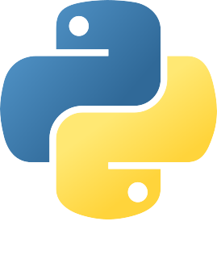

A 360-degree Learning experience designed for geeks who wish to get hands-on Data Science. Mentored by industry experts; learn to apply DS methods and techniques, and acquire analytical skills. So Master the Art of Data Science Now!